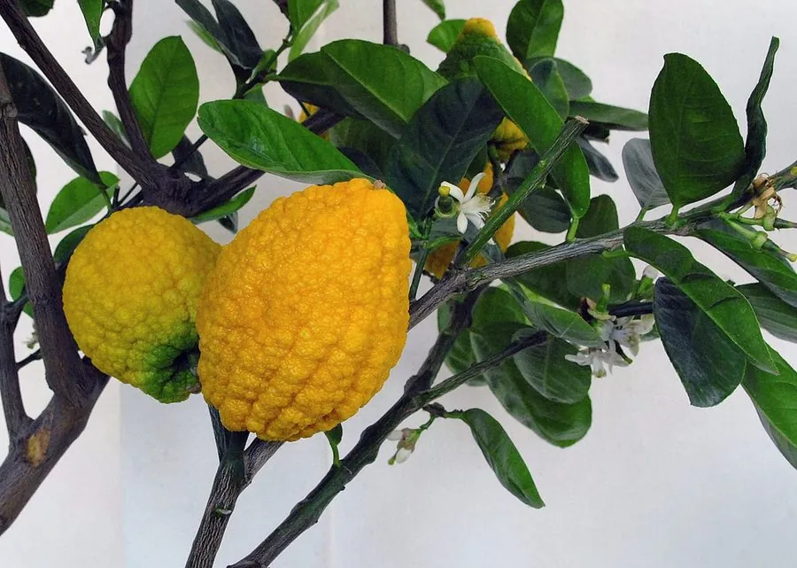

农作物与经济植物 · 植物界
佛手 Citrus medica

佛手是芸香科柑橘属的香橼变种，果实顶端分裂如手指，香气浓郁，多作观赏、闻香和药用，也可制蜜饯。
- 分类
- 门被子植物门纲双子叶植物纲目芸香目科芸香科属柑橘属
- 栖息环境
- 亚热带温暖湿润地区，喜光、不耐寒
- 地理分布
- 原产中国与印度，中国浙江、广东、四川等地栽培
- 保护级别
- 暂无评估（栽培作物）
物种志
佛手是芸香科常绿小乔木或灌木，株高 1–3 m，枝条有刺。叶片长椭圆形，边缘有浅锯齿。花白色，外侧带紫红，芳香。果实为柑果，形似手掌，顶端分裂成多条指状果瓣，果皮淡黄，厚而芳香，表面的油胞富含芳香油，果肉少，几乎无汁，味酸苦。
佛手原产中国与印度，是香橼的栽培变种，浙江金华、广东高要等地栽培历史悠久。它喜温暖湿润、光照充足，不耐寒，适宜在疏松肥沃的微酸性土壤生长。果实成熟后金黄芳香，可摆放室内闻香，也可切片晒干入药，或加工蜜饯、佛手茶。因结果形状奇特，也常作盆栽观赏。佛手喜肥，坐果期要注意修剪和疏果，盆栽冬季需移入室内防寒。
形态与习性
- 株高1–3 m，常绿灌木或小乔木
- 果实顶端分裂如手指
- 果皮淡黄，厚而芳香
- 果肉少汁，味酸苦
- 用途观赏、闻香与药用
- 主要产区浙江金华、广东高要等地
趣味知识
- 佛手的果实顶端分裂成指状，因此得名。
- 佛手是香橼的栽培变种，果肉很少，主要取香气。
- 成熟佛手果可摆放在室内闻香，也能切片入药。